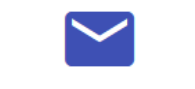
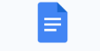

<html>
    <head>
        <meta charset="UTF-8">
        <meta name="viewport" content="width=device-width, initial-scale=1.0">
        <title>Mimochiladigital</title>
        <link rel="icon" href="mochila.png" type="image/X-icon">
        <style>
            body{
                background-color: rgb(212, 181, 240);
                p{
                    color: rgb(0, 0, 0);
                    font-size:10px;
                    font-family: Verdana, Geneva, Tahoma, sans-serif;
                    text-align: justify;
                }
                .título{
                    text-align: center;
                    color: rgb(15, 171, 233);
                    font-family: Comic Sans MS;
                    padding: 1px;
                    margin 5px auto;
                    border: 2px blue;
                    background-color: aliceblue;
                }
                .lista{
                    text-align: left;
                    font-family: Verdana, Geneva, Tahoma, sans-serif;
                    color: blueviolet;
                }
                #pie{
                    text-align: right;
                    color: rgb(80, 30, 230);
                }
            }
        </style>
    </head>
</html>
<body>
<div class="título"><h1 title= "IES Francisco Giner de los Ríos">Mochila digital</h1>
<br>

</div>
<h4> Bienvenidos al curso 2024/2025. En esta página podréis encontrar todos los enlaces a las herramientas digitales que vamos a utilizar durante el curso.</h4>
<div class="lista">
<ol>
    <li><a href="#Primer"><h3>Primer trimestre</h3></a></li>
    <li><a href="#Segundo"><h3>Segundo trimestre</h3></a></li>
    <li><a href="#Tercero"><h3>Tercer trimestre</h3></a></li>
</ol>
</div>
<hr>
<ol>
   <div class="lista"> <li><h3 id="Primer">Primer trimestre</h3></li></div>
        <ul>
            <li><h4>Recursos de Educamadrid</h4>  </li>
            
           <a href="https://aulavirtual32.educa.madrid.org/ies.ginerdelosrios.alcobendas/"><h5>Aula virtual</h5></a> 
           
           <a href="https://correoweb.educa.madrid.org/"><h5>Correo Educamadrid</h5></a> 
           
           <a href="https://login.educa.madrid.org/auth/realms/educamadrid/protocol/saml?SAMLRequest=nZJPbxshEMXv%2FhQRdy%2FLxmtvkG3JjfvHkmtbsRtVvUQYsEPFwpaBpv32ZaFp2q
           rJodyYmffTmwdTYK3u6CL4e3MjvwQJfnARz7dWG6CpOUPBGWoZKKCGtRKo53S%2FeL%2BmVVHSzllvudXoL9nLKgYgnVfWZNlqOUPbzev19u1qc3e6bCo%2BliNBJnVTNqNy0lR1U5%2B4IGxEyqo5jieyuq
           qy9FY6iJwZilg0yDSAIFcGPDM%2B1stqNCRkWJIDGdN6Qi%2BrT1m6jMsqw3yS33vfAcVY27MyhRSBs6JlwilRWHfGLAaEnWS6BZyauYcf18f9zhm7%2B1l6pYxQ5vxyEMc8BPTd4bAb7rb7Q4YsHgO6tgZC
           K91euq%2BKyw836yevXNsg%2FuG16wCHqL%2FrTSVnmHFA80Se9neaMnLz%2FyC10jPBPJvi30FP6I5u4par5c5qxb%2Bnen%2FeWNcy%2F3wYpCCposTwlEbpx7q82ofjZ8l9T0S%2FUAut7cN1fAwvZ8i7
           INEFng%2Bynz%2B%2F8vwH&RelayState=https%3A%2F%2Fcloud.educa.madrid.org%2Fapps%2Fuser_saml%2Fsaml%2Flogin&SigAlg=http%3A%2F%2Fwww.w3.org%2F2001%2F04%2Fxmldsi
           g-more%23rsa-sha256&Signature=qTcf2uBTN8TW3%2BCzwcejvF6GIL9gjhIDEQMP6JJadjLct6s%2BqkdF3jI%2BVuUfg7ClKip8gmeRZqGSXIFRGu95HP5%2BHGukVBt%2BGCDlVdmCsZRtTwe9j1dK
           gh2G%2BeWAHM7zieeBZuPWvyEfWANJcBFvSKK%2F4myg%2FhyPEp2S7jiYXBZc48tu9CnaZlUkZb5CrqczAmQ2jcSWdzwXYR7ya4tLAZ6wffD9R4qr7%2Bi1NXYwTGD5WpBBZV6yi8HsgxCnOoaxoy3sP6xQ
           s4Vl55tMSnHTF1RCudeKH%2BgibS1gvNbeYiefyszHckKgeIL9TBWgxlHzRzXaGc6MQtEXTgVAQ2NkcQ%3D%3D"><h5>Cloud Educamadrid</h5></a> 
           <li><h4>Herramientas de Google</h4> </li>
           <p>Para poder acceder a diferentes aplicaciones vamos a necesitar una cuenta de correo, por ejemlo Gmail, cuenta que tendréis que crear con el consentimiento
             de vuestros padres. </p>
           
           <a href="https://accounts.google.com/lifecycle/steps/signup/name?continue=https://mail.google.com/mail/&ddm=1&dsh=S1547166797:1730482134857761&ec=asw-gmail
           -+++++++++++globalnav-create&flowEntry=SignUp&flowName=GlifWebSignIn&service=mail&theme=glif&TL=AKOx4s0c2BSAGcXtOZbauW73E_qIrfm_iErZ3A1hZQgtiN2_jGxdcq6ke4ej3vzz">
           <h5>Crear una cuenta Google</h5></a> 
           
           <a href="https://accounts.google.com/InteractiveLogin/identifier?continue=https%3A%2F%2Fmail.google.com%2Fmail%2F%3Fhl%3Des&ddm=1&emr=1&flowEntry=ServiceLogi
           n&flowName=GlifWebSignIn&hl=es&ifkv=AcMMx-ewrxdKlGnD-j4kkj56IIlO9VlQGtoTl4MuxOL3fC_P3GsjXE3qhMqRuhXZmGpoJJbQWZHMNw&ltmpl=default&ltmplcache=2&osid=1&passive=
           true&rm=false&scc=1&service=mail&ss=1"><h5>Correo Gmail</h5></a> 
            
           <a href="https://workspace.google.com/products/drive/"><h5>Drive</h5></a> 
           <p>Con nuestra cuenta de Google también tendremos acceso a tres herramientas de ofimática que vamos a utilizar, procesador de textos, presentación y hoja de cálculo</p>
           
           <a href="https://workspace.google.com/products/docs/"><h5>Procesador de textos</h5></a> 
           
           <a href="https://workspace.google.com/products/slides/"><h5>Presentación</h5></a> 
           
           <a href="https://workspace.google.com/products/sheets/"><h5>Hoja de cálculo</h5></a> 
        </ul>

<hr>
    <div class=lista><li><h3 id="Segundo">Segundo trimestre</h3></li></div>
    <p> En este trimestre trabajaremos con Tinkercad, una aplicación que nos permitirá simular circuitos eléctricos y electrónicos y realizar diseños en 3D que luego imprimiremos
        con nuestra impresora 3D
    </p>
    
    <a href="https://www.tinkercad.com/"><h5>Tinkercad</h5></a> 
    <br>
    <hr>
    <div class=lista><li><h3 id="Tercero">Tercer trimestre</h3></li></div>
    <p>Ester trimestre lo dedicaremos a programar con Scratch y también haremos aplicaciones para el móvil con App inventor.</p>
    
    <a href="https://appinventor.mit.edu/"><h5>App inventor</h5></a> 
    <hr>
    
    <a href="https://scratch.mit.edu/"><h5>Scratch</h5></a> 

</ol>
<div id="pie">
    <footer>&copy; Ana Belén Martín Sánchez</footer>
</div>

</body>